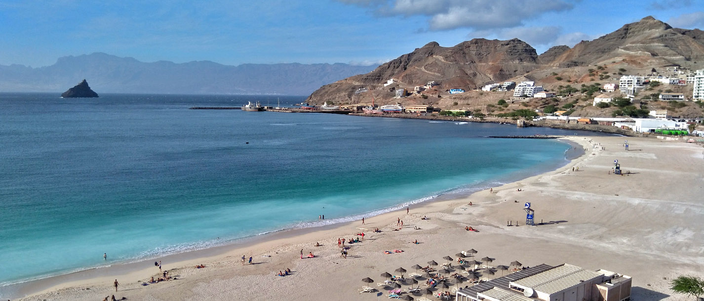
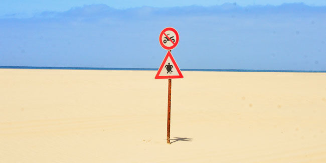
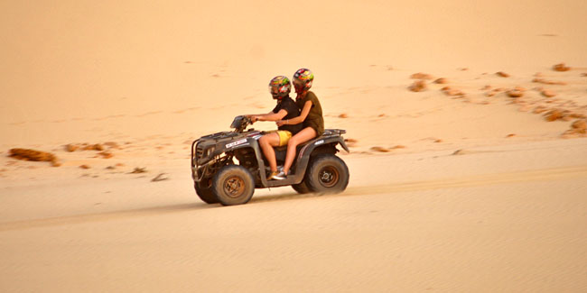
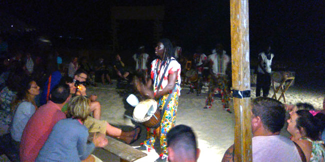
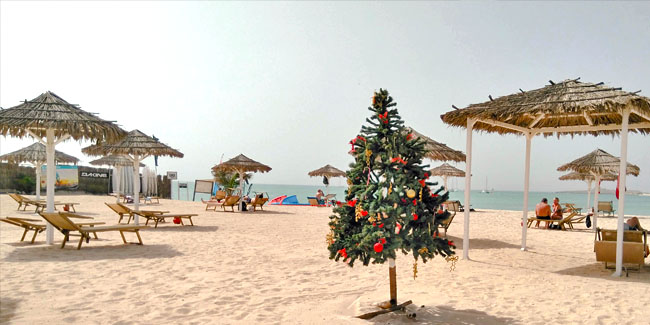
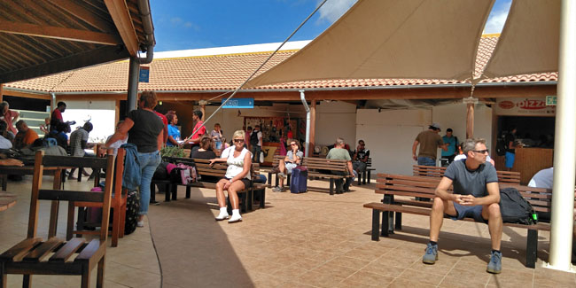
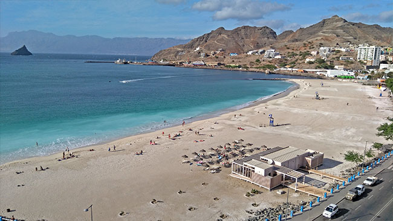
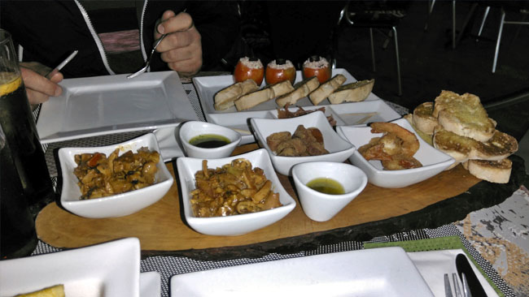
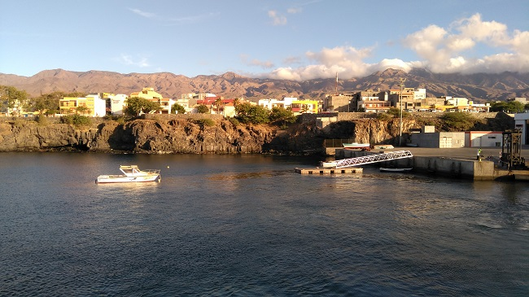

Íratkozz fel a hírlevelünkre, ingyenes utazási tippekért és trükkökért.

CABO VERDE
A Zöld-foki szigetek az Atlanti-óceán gyöngyszeme, Afrikától mintegy 450 km-re, nyugatra fekszik.
Egzotikus, érintetlen, turisták által alig felfedezett terület, ahol mindig meleg és napsütéses
klíma és kristálytiszta, néhol smaragdzöld, néhol azúrkék tenger fogadja az ide látogatót. A
szigeteket körülölelő Atlanti-óceán különleges világa kék bálnákkal, palackorrú delfinekkel és
teknősökkel igazi kuriózum, szélfútta fehér homokos strandjai lenyűgözik a nyaralni vágyókat.
Érdemes ellátogatni ide, ahol télen is nyár fogadja és ahol felfedezheti a búvárok, szörfösök
paradicsomát!
A Nyugat-Afrika partjainál, a Zöld-fok és a szenegáli partok előterében fekvő tíz nagyobb és öt
kisebb tagból álló vulkanikus szigetcsoport (4033 km2) évszázadokon át Portugália fennhatósága alá
tartozott, jelenleg önálló köztársaság. A szigetcsoport fővárosa a mintegy 100.000 fős lakosú Praia,
amely Santiago szigetén fekszik, ám idegenforgalmi szempontból legjelentősebb Sal szigete, ahova a
charterjáratok közlekednek. A szigeteket keskeny síkság keretezi, a mögöttes fennsíkok vulkáni
kúpokat hordoznak. Eső meglehetősen ritkán esik, viszont állandó szél fúj, amely ideális a vízi
sportok szerelmeseinek, főként a szörfösöknek. A trópusi szavanna éghajlatú szigetek ültetvényein
főleg banánt, datolyát, cukornádat valamint kávét termesztenek exportra. Az ország lakosainak száma
mintegy 520.000 fő, kisebb része a behurcolt rabszolgák leszármazottaiból, nagyobb része mulattokból
áll. A népesség főként az idegenforgalomból és a halászatból él.
A kis ország földrajzi helyzetének köszönhetően széttagolt, a szigetek között a legfőbb
összeköttetést a kompok és hajók, valamint a kisebb repülőjáratok jelentik (Praia és Sal között
naponta közlekedik repülőjárat).
Pénzneme
Escudo (CVE), 1 euró = 110 CVE 2023-ban, de a minndennapokban 100 a
váltószám
Időeltolódás
Magyarországhoz képest -2 óra
Nyelv
Kreol és portugál, de az angolt is egyre többen beszélik, főleg ahol a
turizmus jelen
van
Vízum
30 napnál nem hosszabb, turizmus céljából történő látogatás esetén kb. 31
EUR az EASE, amit "repülőtéri biztonsági adó" néven emlegetnek, de lényegében hívhatjuk
vízumdíjnak is. Ezen felületen tudsz online regisztrálni: EASE REGISZTRÁCIÓ
Utazás
Ex-portugál gyarmat lévén a közelmúltig a legegyszerűbb lehetőség Lisszabonon keresztül a
TAPPortugal légitársasággal volt, de 2023-tól már Bécsből is indulnak közvetlen járatok, illetve
Smartwings charterek Pozsony és Prága városokból is, attól függően, hogy melyik szigetre tervezel
utazni. A Turisták körében Sal szigete a legnépszerűbb, így oda a legkönnyebb járatot találni.
Mi 2017 decemberében voltunk egy szerencsés véletlennek köszönhetően, ugyanis 15.000 Ft-nak
megfelelő
összegért elárazott repjegyet sikerült kifognunk Sao Vicente - Budapest útvonalra. Nem sokat
gondolkodtunk, hogy mi tévők legyünk, azonnal le is foglaltuk. Több hétnyi keresgélés után
Stuttgartból találtunk egy akciós TUI nyaralójáratot, ami Boa Vista szigetére repült, így végül
retúr 60 ezer magyar forintból sikerült egy közel két hetes 3 szigetes kiruccanást csinálnunk.
UTAZÓS TIPP:
Foglalás előtt használj árösszehasonlító oldalakat, mint a
Google Flights vagy a Skyscanner, hogy garantáltan a
legjobb áron utazhass!
Boa Vista, a Zöld-foki Köztársaság északi részén található, ahol lenyűgöző trópusi tájak,
kiterjedt homokdűnék és gyönyörű tengerpartok teszik egyedivé. A sziget neve portugálul "szép
kilátás"-t jelent, és ez tökéletesen tükrözi az itteni mesés panorámát.
Éghajlata trópusi, ami azt jelenti, hogy egész évben kellemesen meleg. A sziget a
szezonális szélnek köszönhetően ideális célpont a szörfösök és a kitesurfosok számára. A kék
lagúnák és a fehér homokos partok a tengeri élővilágban gazdagok, így a búvárkodás és a
snorkeling is népszerű tevékenységek.
A Viana sivatag, az egyik jellegzetes terület, lenyűgöző homokdűnéket kínál, ahol a
sárga homok finoman érintkezik a kék éggel. A Santa Monica part, a sziget legnagyobb strandja,
hosszú, finom homokjával a naplemente idején különösen lenyűgöző.

Közlekedési tábla a sivatagban - Boa Vista
A szigeten található Sal Rei városka érintetlen, hagyományos charmjával vonzza a látogatókat. A
városban a pastell színű házak és a helyi piac a kulturális gazdagság megnyilvánulása. Az ételek
terén a friss tenger gyümölcsei és a helyi konyha specialitásai, például a Cachupa, a
látogatókat kulináris utazásra hívják.
Legjobb programok Boa Vista szigetén:
Quad túra a sivatagban
A Boa Vista-i sivatag felfedezése quad túrával izgalmas és
felejthetetlen kaland lehet minden kíváncsi utazónak. Utunkat a Quad Zone
csapatánál foglaltuk, mert a helyi szállásadónk nagyon ajánlotta őket.
Ami nagyon tetszett, hogy a meghírdetett program idejét bőven kihasználtuk, az út
végén nem maradt bennünk olyan érzés, hogy csak a pénzért csinálják. Szinte az egész
szigetet körbejártuk, olyan sivatagi dűnéken mentünk keresztül, amit eddig max a
TV-kben láttunk. Szpuer volt, hogy eljuthattunkk olyan területekre, amelyek gyalog
vagy más járművel nehezen
megközelíthetők, így valódi élményt szerezhettünk a Boa Vista-i
szárazság különleges természeti jelenségeiről. Utunk során érintettük a méltán híres
Santa Monica strandot is, melynek 2 métert meghaladó hullámai igazi felfrissülést
hoztak a sivatagi meleg után. Az út során végig fotóztak is minket, amely képeket a
végén megosztották a részt vevőkkel.

Viana sivatag - Boa Vista
Afrika show a tengerparton
Ezt a programot a Morabeza beach
bar
tulajdonosa ajánlotta, akivel
hosszassan beszélgettünk, hogy milyen a szigeten élni. Mint kiderült heti egyszer
náluk rendezik meg ott élő, Szenegáli művészekkel. A turistáknak 80 eurós áron
adják - tartozik hozzá svéd asztalos vacsora is, italokkal - de mivel a hely
nyitott, mondta, hogy nyugodtan csatlakozzunk,
teljesen ingyen. A show végig ineraktív volt, mindenkit bevontak a táncosok a
különféle törzsi táncaikba.

Africa Show@Morabeza - Boa Vista
Tengerpartok
A Santa Monica part, Boa Vista legnagyobb strandja, hosszú,
aranyszínű homokjával és kékóceánjával a naplemente idején különlegesen varázslatos
látványt nyújt. A Chaves part szintén lenyűgöző, hatalmas homokos területtel és lágy
hullámokkal, ideális úszásra és pihenésre.
A sziget déli részén található Estoril part a kékóceán partján
húzódik, és a part menti pálmafákkal kísért homokpadok kényelmet kínálnak a napozás
és a tenger élvezetéhez. A Curral Velho part a partvidéki táj változatosságát
tükrözi, ahol a sziklák és homok ötvöződik, létrehozva egy fotogén környezetet.

Sokan képzeljük el így a Karácsonyt 🎄⛱️- Boa Vista
6 nap Boa Vista után helyközi repülőjáratokkal indultunk tovább Sao Vicente szigetére.
Járatokkal igen, mert nincs közvetlen repülő a 2 sziget között. Így először át kell repülni
Sal szigetére, majd onnan indul tovább egy másik gép a végcélunk felé.

Reptéri várakozás - Boa Vista
Sao Vicente, a Zöld-foki Köztársaság második legnagyobb szigete, gazdag kulturális élettel és
lenyűgöző tájakkal büszkélkedik. Mindelo, a sziget fővárosa, egy élénk kikötőváros, mely a
zenéjéről és kulturális rendezvényeiről ismert. A sziget partjait fehér homokos strandok
díszítik, és a távoli hegyek festői látványa teszi Sao Vicente-t ideális úti céllá azok számára,
akik a trópusi szépségekben és a vibráló helyi életben keresik az élményeket.
A szállásunk Mindeloban egy kedves helyi idősebb hölgynél volt, akinek a saját lakásában kaptunk
egy szobát és egy fürdőt. Mindelo Sao Vicente szigetének kulturális központja, egy élénk város,
amely gazdag
és sokszínű kulturális élettel büszkélkedik. A város híres a kiváló zenei és művészeti
rendezvényeiről, amelyek szorosan kapcsolódnak a helyi kultúrához és hagyományokhoz.
Mindelo otthona a hagyományos Zöld-foki zenének, például a morna és a coladeira stílusoknak. A
helyi bárok és éttermek gyakran játszanak élőzenét, ahol a látogatók megismerhetik a sziget
autentikus zenei színterét. Évente megrendezik a Mindelact Fesztivált, amely a színház és a
művészetek iránt érdeklődőket vonzza a világ minden tájáról.

A helyi Copacabana beach - Sao Vicente
Mindelon belül a szállásadó nénink vitt el mindkét ott töltött esténken vacsorázni. Első este az
Ő ajánlására tértünk be egy hotel éttermébe. Általában nem szoktunk ilyen helyeken vacsorázni,
de mivel Georgette mama ajánlotta, így kipróbáltuk és nagyon nem bántuk meg. Másnap csatlakozott
hozzánk a szálláson egy angol pár is, így 5-en mentünk el este Georgette mama kedvenc helyi
éttermébe. Álmunkban nem gondoltuk, hogy ilyen szuper esténk lesz, élő zene, tánc, minden volt,
gyakorlatilag fejest ugorhattunk a valódi zöld-foki életérzésbe.

Tapasok helyi alapanyagokból - Sao Vicente
Sao Vicente értékelése:
Santo Antao
Az egész zöld-foki szigeteki túránk első számú célpontja Santo Antao szigete volt. Korábban még
csak hasonlót se láttunk, így nagyon vártuk, hogy reggel 7-kor indulhassunk az első hajóval.
Santo Antao Sao Vicente szigetről csak hajóval közelíthető meg, a terepviszonyok miatt nincs
repülőtere. Mivel 2017-ben még nagyon sok szálloda, vagy apartman sem volt a szigeten, így 1
napos túra keretén belül fedeztük fel. Guide-ot Georgette mama intézett nekünk, Ő onnan
származik, valamelyik kuzinját hívta fel ,hogy kalauzoljon végig minket a szigeten és minden
fontos részét mutassa meg nekünk.

Érkezés a szigetre - Santo Antao
A túránkhoz egy holland család is csatlakozott, így 6-an indultunk meg felfedezni Santo Antao
szigetét. A szigeten még középiskola sincs, a nagyobb gyerekek minden nap Mindeloba járnak át
suliba. Mivel érdemi tömegközlekedés sincs, így már az több órás sétát jelent, hogy egyáltalán a
kikötőbe eljussanak a falujukból. Itt azért már érződött az igazi Afrika szele.
A helyiek halászattal, cukornádból szörp és rum készítéssel foglalkoznak leginkább. A túra során
meglátogattunk egy lokál konyhát is, ahol rumot ksézítettek. Összességében az egész napos túra
során az összes lehetséges útvonalat bejártuk a szigeten, a guideunk még Georgette mama
szülőházához is elvitt minket.
A hajó visszafelé még szürkület előtt indult, Mindelóba már sötétbe érkeztünk vissza. Santo
Antao biztosan örök élmény maradt nekünk, szinte minden utunk után megállapítjuk, hogy szívesen
visszamennénk még egyszer, de ide biztosan vissza fogunk jönni még több napra. Hihetetlen szép
sziget!